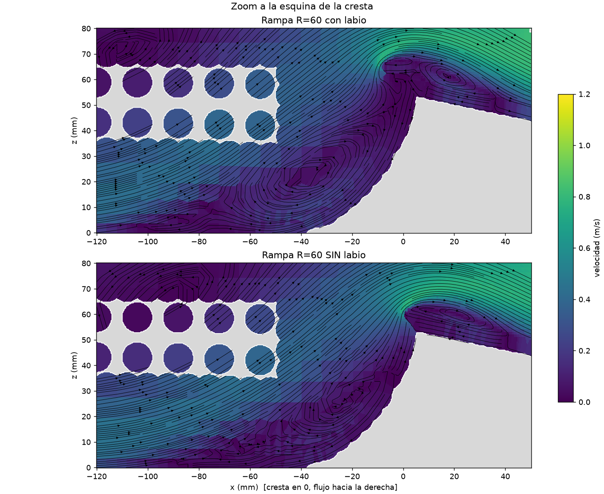
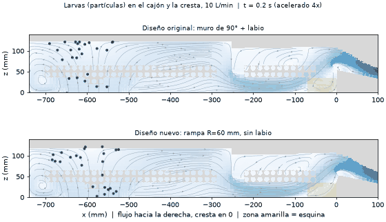
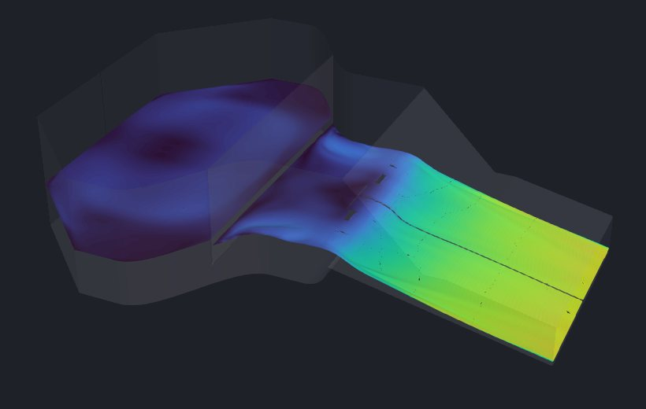
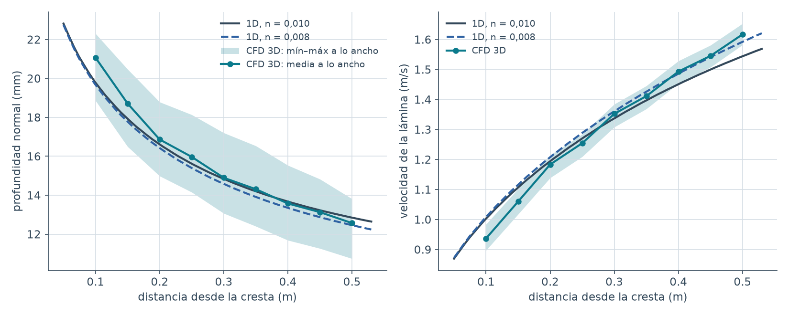
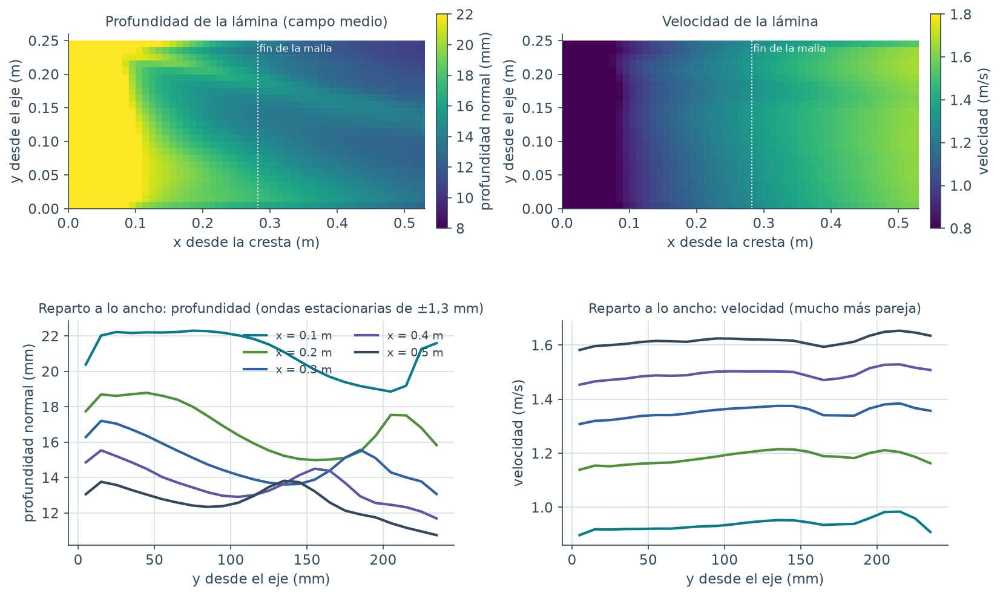
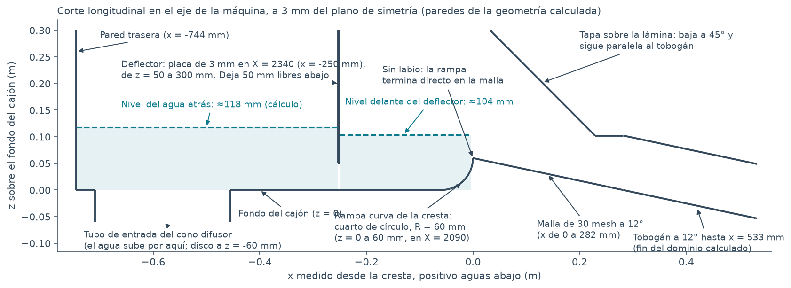
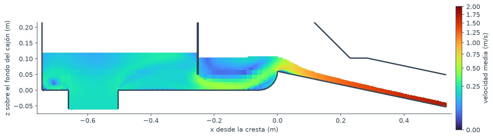
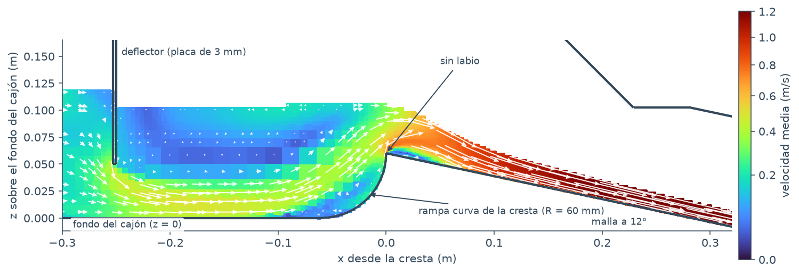
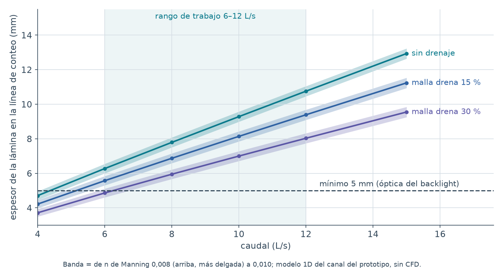
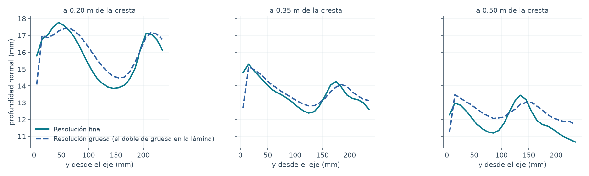

Informe preliminar · actualizado el 6 de octubre de 2026 · simulación CFD 3D con OpenFOAM
Flujo del agua en el contador de postlarvas
A 10 L/s, el prototipo forma una lámina de agua delgada, rápida y estable, con velocidad pareja a lo ancho, sin aire atrapado ni retorno: buenas condiciones para captar imágenes de las larvas. Abajo se puede recorrer el flujo en 3D y ver cómo arranca el cálculo. Desde la actualización de octubre el visor muestra el diseño nuevo de la cresta (rampa curva sin labio) y permite compararlo con el original.
Prototipo
Caudal 10 L/s
Larvas que pasan con 10 L/s · en teoría, según cuántas larvas lleve el agua
5 larvas por litro3 000 por minuto180 000 por hora · 50 por segundo
10 larvas por litro6 000 por minuto360 000 por hora · 100 por segundo
20 larvas por litro12 000 por minuto720 000 por hora · 200 por segundo
10 L/s son 600 L por minuto (36 000 L por hora), así que las larvas por minuto son 600 por la concentración en larvas por litro. Con 5 y 10 larvas por litro, el modelo 2D del canal estima que las larvas que se tapan entre sí restan menos de 1 % del conteo; con 20 larvas por litro, 1,1–1,4 % (sin corrección estadística).
Ver el flujo
00,250,512 m/s
Diseño nuevo: rampa R = 60 mm, sin labiovelocidad media del agua
Arrastrar: girar · Mayús + arrastrar o clic derecho: desplazar · Rueda o pellizco: acercar
Cargando el visor 3D…
Diseño
Campo medio del flujo ya establecido. Se simuló el semiancho y se refleja para mostrar la máquina completa. Las partículas son trazadores del flujo medio que siguen solo el agua; su densidad no representa el caudal. A «tiempo real» la lámina pasa en menos de un segundo, por eso el visor empieza en cámara lenta. La malla se calculó como pared cerrada: el agua que en la máquina pasa a través de ella hacia el sumidero no está en este cálculo (su efecto estimado está en «Información técnica»).
Cuadro 1 de 45
Color: velocidad de 0 a 3 m/s (mismo código que en el visor 3D)
Condición inicial numérica: el cajón parte lleno y con el agua en reposo, y se abre la entrada. No es el arranque real de la máquina. Se ve el frente de agua cruzar la malla y después el cajón chapotear hasta asentarse.
Cambio de diseño: rampa curva en la cresta, sin labio
En el diseño original el fondo del cajón subía a la cresta en una esquina de 90°, con un labio de 5 mm encima. El cálculo mostraba ahí un remolino pegado a la esquina. Se probó primero una rampa de cuarto de círculo (radio de 60 mm, igual al alto de la cresta) y después la misma rampa sin el labio. Las tres corridas usan la misma malla de 1,57 millones de celdas, el mismo caudal y el mismo promedio de 2,5 a 4 s. Solo cambia la geometría.
| Medida cerca de la esquina | Original (90° con labio) | Rampa con labio | Rampa sin labio |
|---|---|---|---|
| Volumen de agua con retorno fuerte (Ux < −0,25 m/s) | 12,1 mL | 5,5 mL | 0,8 mL |
| Volumen con retorno moderado (Ux < −0,10 m/s) | 66,8 mL | 45,3 mL | 16,9 mL |
| Retorno máximo | −0,47 m/s | −0,49 m/s | −0,33 m/s |
| Tiempo medio de una partícula en la zona de la esquina | 0,32 s | 0,23 s | 0,20 s |
| Peor caso en esa zona | 4,6 s | 3,1 s | 2,2 s |
| Partículas retenidas más de 30 s | 0,1 % | 0,1 % | 0 % |
| Nivel del agua en la parte trasera del cajón | 122 mm | 122 mm | 118 mm |
| Espesor de la lámina a 0,5 m de la cresta | 11,9 mm | 11,9 mm | 12,6 mm |
| Espesor de la lámina a 0,1 m de la cresta | 19,3 mm | 19,2 mm | 21,1 mm |


Lo que muestra el cálculo
- Sin labio, el retorno fuerte en la esquina baja de 12,1 a 0,8 mL y el máximo de −0,47 a −0,33 m/s.
- Ninguna de las 1 500 partículas de prueba queda atrapada más de 30 s, y todas salen por la cresta.
- No aparece aire bajo la lámina ni un desprendimiento nuevo después de la cresta.
- La rampa con labio mejora poco. Quitar el labio es lo que cambia el resultado.
Por comprobar
- Sin el labio la lámina sale 0,7 mm más gruesa a 0,5 m de la cresta (12,6 contra 11,9 mm) y casi 2 mm a 0,1 m. La velocidad a 0,5 m es la misma (1,62 contra 1,63 m/s). Es del orden de una celda de la malla; se confirma en la maqueta.
- El nivel del cajón baja unos 4 mm, casi lo que medía el labio (5 mm). La calibración del coeficiente del vertedero (1,705) debe rehacerse con esta cresta.
- Es un solo caudal (10 L/s) y un campo promedio. El seguimiento de partículas usa una difusión turbulenta supuesta: sirve para comparar diseños, no como cifra absoluta.
- La maqueta debe poder montar y quitar un labio de 5 mm para confirmar el resultado antes de fabricar en acero inoxidable.
Qué muestra la simulación
Respaldado por el cálculo
- Lámina de 12,6 mm a 1,62 m/s a 0,5 m de la cresta; el 3D coincide con el modelo 1D dentro de 2–5 %.
- En el diseño original, los resultados se repitieron al calcular con otra resolución: niveles del cajón dentro de ~1 mm, espesor de la lámina dentro de 5 % y velocidad dentro de 2 %. Con el diseño nuevo se calculó una sola resolución.
- Velocidad pareja a lo ancho (variación de 1,1–2,2 %): todas las larvas cruzan el campo de la cámara a la misma velocidad, con el mismo desenfoque de movimiento.
- Sin aire atrapado (0,00 %) y sin contraflujo en la lámina. El contraflujo en la zona de la cresta baja de 11,3 % a 6,4 % del agua.
- El estrechamiento previo a la cresta reparte bien el agua. En una versión anterior, con la contracción sobre la malla, la lámina quedaba en 3 mm en los bordes y 12 mm en el centro (modelo 2D).
- Larvas pasivas (modelo 2D): todas llegan a la línea de conteo en ~0,85 s.
- De 8 a 12 L/s el espesor de la lámina en la línea de conteo supera 5 mm con holgura (modelo 1D).
Por confirmar con la maqueta y las siguientes fases
- Superficie del agua en la línea de conteo (rugosidad, espuma): se comprueba con una maqueta con la cámara y el backlight reales.
- Ondas suaves de ±1,4 mm en la profundidad a lo ancho: se reproducen con otra resolución de cálculo, así que son reales en el modelo. Con luz de 850–905 nm cambian el brillo del fondo menos de ±1 % y se corrigen por software; su amplitud exacta se mide en la maqueta.
- Drenaje real de la malla de 30 mesh, que fija el caudal mínimo de trabajo: se mide en banco. El 3D actual la trata como pared; según el modelo 1D, con 15–30 % de drenaje la lámina a 0,5 m sería 13–27 % más delgada y con casi la misma velocidad.
- Arco, línea de conteo y cono difusor: siguientes fases de simulación.
- Nivel del agua en el cajón: unos 118 mm detrás del deflector y 104 mm delante (el modelo de diseño preveía 112,5 mm); no compromete la estructura.
- Retención de larvas en el cajón (unos 32 L bajo la cresta) y tolerancia de la larva a ~2 m/s.
Siguientes pasos
- Cresta. Ya hay un diseño nuevo (rampa curva sin labio). Falta rehacer la calibración del coeficiente del vertedero y comprobarlo en la maqueta, con un labio desmontable para comparar.
- Arco y línea de conteo. Con la lámina de entrada tomada de este cálculo y con la malla drenando (15 % y 30 % como sensibilidad, hasta medir el valor real).
- Banco de la malla. Medir el drenaje real de un trozo de malla de 30 mesh.
- Maqueta transparente 1:1 del cajón, la cresta y los primeros 0,6 m, con la cámara y el backlight reales: con ella se eligen y validan la longitud de onda del backlight y la cámara.
Información técnica: gráficas, cortes y criteriosMétodo, lámina, cajón, criterios de aceptación, tamaño y confianza
Aviso: las gráficas, cortes y tablas de esta sección corresponden al diseño nuevo (rampa curva sin labio, corrida p2_rampa_sinlabio). La prueba de resolución de «Confianza» se hizo con el diseño original y así se indica allí.
Qué se simuló
- Geometría
- Prototipo tomado directamente del modelo de Fusion 360: cono difusor, cajón con deflector, estrechamiento de 994 a 504 mm, cresta con rampa curva de R = 60 mm y sin labio, malla de 12° y tobogán.
- Dominio
- Semiancho (plano de simetría en el eje), desde 0,74 m aguas arriba de la cresta hasta 0,53 m aguas abajo. Agua y aire.
- Método
- OpenFOAM v2512,
interFoam(superficie libre VOF), turbulencia k-ω SST, pared lisa. - Corrida
p2_rampa_sinlabio: 1,59 millones de celdas, promedio del flujo de 2,5 a 4 s. El diseño original (p2_medio_grueso, muro de 90° con labio) se calculó con la misma malla y sirve de referencia.- Caudal
- 10 L/s (5 L/s en el semiancho), entrada uniforme de 0,197 m/s hacia arriba por el tubo del cono.
- No incluido
- Drenaje de la malla de 30 mesh (se modeló como pared), arco y línea de conteo, cono difusor, manguera, larvas.
La lámina sobre la malla y el tobogán
Se adelgaza a medida que acelera: 21 mm a 0,1 m de la cresta y 12,6 mm a 0,5 m. La velocidad pasa de 0,94 a 1,62 m/s. El modelo 1D con el que se dimensionó el canal acierta en el espesor a ±2 % y en la velocidad a ±5 %.
Este cálculo trata la malla como pared cerrada, es decir, sin drenaje. Con la malla drenando, la lámina aguas abajo es más delgada y casi igual de rápida (modelo 1D, n = 0,010): a 0,5 m de la cresta, 12,8 mm y 1,54 m/s sin drenaje; 11,1 mm y 1,53 m/s con 15 % de drenaje; 9,3 mm y 1,50 m/s con 30 %. Aguas arriba de la malla (cajón, deflector y cresta) el drenaje no cambia el flujo, porque una lámina supercrítica no transmite lo que pasa aguas abajo.



El cajón, el deflector y la cresta
El corte a lo largo del eje muestra cómo llega el agua a la cresta. Entra por el cono (0,15–0,25 m/s), pasa bajo el deflector pegada al fondo (0,29 m/s de media; el diseño pedía 0,30), sube por la rampa curva y sale por encima. Sobre esa corriente, en el compartimento delantero, el agua está casi quieta (menos de 0,1 m/s).



| Posición a lo largo del eje | Nivel del agua (mm) | Comentario |
|---|---|---|
| Parte trasera, x de −0,70 a −0,27 m | 118 | Parejo a lo ancho. Diseño: 112,5 mm. |
| Justo después del deflector, x = −0,23 m | 104 | Escalón de ~14 mm, parejo a lo ancho de todo el cajón. |
| Hasta la cresta, x de −0,20 a −0,02 m | 104–107 | El agua acelera hacia la cresta. |
El escalón coincide con el paso bajo el deflector, y es coherente con una pérdida de carga en ese paso. No probé una variante sin deflector, así que es una atribución probable, no demostrada. El margen hasta el borde de las paredes (300 mm) pasa de 187 a unos 182 mm: no compromete la estructura. La regla de nivel y cualquier sensor deben esperar dos niveles distintos.
Criterios de aceptación
Los seis criterios definidos para la ventana de conteo, evaluados donde el cálculo llega (0,5 m de la cresta). El primero se evaluará como variación de brillo del fondo en la imagen, medida en la maqueta con la cámara real.
| Criterio | Resultado | Estado |
|---|---|---|
| 1. Uniformidad de la lámina a lo ancho (brillo del fondo en la imagen) | Profundidad con ondas de ±1,5 mm (desviación típica 7,0 %) a 0,5 m. Efecto en el brillo del fondo: ±0,7–0,9 % con luz de 850–905 nm, ±4 % con 940 nm (estimado por escala a partir del cálculo anterior); se corrige con un fondo adaptativo | Se valida en la maqueta |
| 2. Velocidad uniforme ±3 % | Variación (CV) de 1,1 %; entre −2,5 % y +1,9 % a 0,5 m | Cerca del margen |
| 3. Sin despegue con recirculación (cresta y cono) | 0,00 % de contraflujo en la lámina. Remolino lento en el fondo del cajón y retorno débil (máx. −0,33 m/s) en el pie de la rampa; sin labio no hay burbuja de separación bajo la lámina | Cumple en la láminaCono por simular |
| 4. Entrada al cajón < 0,3 m/s | La entrada es una condición impuesta (0,197 m/s); máximo de 0,26 m/s en la zona de entrada | Por simular (fase 4) |
| 5. Sin aire arrastrado (< 1 %) | Aire atrapado resuelto: 0,00 %. No se ven burbujas menores de 2 mm ni auto-aireación | Cumple |
| 6. Lámina ≥ 5 mm | 12,6 mm a 0,5 m de la cresta | Cumple aquíDrenaje por medir |
Tamaño: espesor de la lámina según el caudal
En la línea de conteo, con el modelo 1D (respaldado por el 3D hasta 0,5 m). De 8 a 12 L/s el espesor supera 5 mm con holgura. Para trabajar a 6 L/s hay que medir el drenaje real de la malla: con drenaje de hasta 15 % sigue por encima de 5 mm, y con 30 % queda en 4,6–5,1 mm. A 4 L/s la lámina queda por debajo de 5 mm.

La velocidad de la lámina va de 1,4 a 2,35 m/s según caudal y drenaje. Para la cámara que se elija, esa velocidad fija dos requisitos: una exposición (o un destello del backlight) lo bastante corta para no emborronar la larva, y una cadencia de imágenes suficiente para que cada larva salga al menos una vez. A 2 m/s, un desenfoque de movimiento de 0,25 mm exige unos 125 µs de exposición y uno de 1 mm, unos 500 µs; y a 120 imágenes por segundo el agua avanza unos 17 mm entre imágenes, así que el campo de visión en el sentido del flujo debe ser mayor que eso. Como la velocidad es pareja a lo ancho, ambos valores sirven para todo el ancho.
Puntos a comprobar
- Superficie del agua
- A ~2 m/s es probable una superficie con algo de rugosidad o espuma, que afecta a la luz del backlight. Ninguna de las simulaciones lo resuelve: se comprueba con una maqueta con la cámara y el backlight reales.
- Piscina permanente
- Bajo la cresta quedan unos 32 L que no salen por la cresta (~320 larvas a 10 larvas/L) y necesitan un enjuague de ~10 s entre lotes. En el flujo medio, 61 % de las líneas de corriente desde la entrada llegan a la lámina dentro del agua (4–11 s, mediana 7,0 s), 20 % se detienen en zonas casi estancadas (< 5 mm/s) y 20 % tocan la superficie libre del cajón, donde el campo medio no permite seguirlas. Con partículas que siguen el flujo, ninguna de 1 500 queda atrapada más de 30 s. Es un promedio del flujo ya establecido, no un cálculo de larvas: para el conteo por lote habría que simular trazadores en el flujo real.
- Salpicadura en la cresta
- En el cálculo no hay agua despegada de la lámina: solo 0,06 % del agua de la zona está a más de 5 mm sobre la superficie media, el máximo son ~7 mm y nada supera 20 mm. El cálculo no resuelve gotas ni rocío: si la cresta salpica en la máquina real, la maqueta lo mostrará. La tapa sobre la lámina queda ~90 mm por encima.
- Trato a la larva
- El CFD da velocidades, no cómo reacciona el animal a ~2 m/s ni a la caída final. Hace falta un valor de tolerancia, de bibliografía o de prueba.
- Deflector
- Se conservó a pedido. Genera el paso de 0,3 m/s bajo él y un escalón de ~14 mm de nivel. Una variante sin deflector mostraría cuánto aporta al reparto.
- Simetría
- El semiancho obliga a un flujo simétrico: no ve una máquina desnivelada ni una entrada descentrada.
Confianza
El flujo calculado es casi estacionario: el nivel del agua oscila unos ±0,4 % alrededor de un valor medio, y las cifras del informe son promedios del flujo ya establecido. Son una estimación mejor fundada que los modelos 1D y 2D, no un valor definitivo.
Para saber si los resultados dependen de la resolución del cálculo, en el diseño original todo se repitió con una resolución el doble de gruesa en la lámina. Esta prueba no se repitió con la rampa sin labio, que cambia solo la cresta; las cifras de la tabla son del diseño original y se muestran como referencia del método.
| Magnitud | Resolución fina | Resolución gruesa |
|---|---|---|
| Nivel del agua en la parte trasera del cajón (mm, diseño original) | 122,0 | 121,3 |
| Nivel del agua delante del deflector (mm) | ≈108 | ≈107 |
| Velocidad bajo el deflector (m/s, media) | 0,26–0,33 | 0,27–0,34 |
| Profundidad de la lámina a 0,5 m de la cresta (mm) | 11,9 | 12,4 |
| Velocidad de la lámina a 0,5 m (m/s) | 1,63 | 1,61 |
| Aire atrapado y contraflujo en la lámina | 0,00 % | 0,00 % |
| Ondas laterales de la profundidad (desviación típica, media de 0,30 a 0,50 m) | 6,2 % | 4,8 % |

La corrida de resolución gruesa se reinició a mitad de camino con un limitador de velocidad del aire (tope de 6 m/s), porque el aire desarrolló un chorro numérico que frenaba el cálculo; el limitador no actúa sobre el agua, que no pasa de 2,4 m/s. Además, en la validación sobre plano inclinado, el espesor de la lámina calculado cambia menos de 3 % al refinar el cálculo.